Gallery
Every picture in the log, in the order it was made. Pictures from the running game are screenshots. Pictures from the image model carry the prompt that made them; none of them is in the game as it is. Things that were rebuilt are shown before and after.
Day 1 Thursday 12 November
Day one: a gun on a lighthouse in a storm
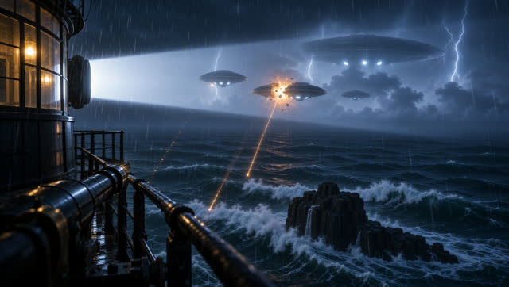
The look to aim for. Art direction only: this picture is not in the game, and the game has had to earn every part of it since.
Image model Thu 12 Nov, 15:40
PromptCinematic film still, anamorphic lens, night, violent storm at sea. First-person view from the wet iron gallery of a lighthouse: rain…113 words
Cinematic film still, anamorphic lens, night, violent storm at sea. First-person view from the wet iron gallery of a lighthouse: rain streaking through a huge white lighthouse beam that cuts across the frame, towering black-green waves breaking white on basalt rock below. In the beam, three dark disc-shaped craft with brass ribs and glowing blue-white irises underneath, one of them breaking apart in an orange explosion that lights the low cloud from inside; tracer rounds arc up from the foreground gun. Lightning silhouettes a much larger disc inside the cloud. Wet metal reflections, volumetric light, photoreal, fine film grain. No text, no letters, no numbers, no logos, no brand names, no maker's badges.

The scout, the small saucer, about three metres across. The seed that was chosen; two others put the iris on the side wall, and one grew a spike that read as an antenna.
Image model Thu 12 Nov, 15:40
PromptA small unmanned flying craft about three metres across as a single object: a smooth lens-shaped disc with a hull of dark matte ceramic…150 words
A small unmanned flying craft about three metres across as a single object: a smooth lens-shaped disc with a hull of dark matte ceramic like fired basalt, divided by eight dull brass ribs that run from the rim to a low brass cap on top; on the underside, visible in this view from slightly below, a closed mechanical iris of overlapping dark blades like a camera aperture with a thin line of cold blue-white light at its centre. No windows, no antennas, no legs, no markings. An original design. Centred, the whole object in frame with clear space around it, three-quarter view from slightly below, on a seamless plain mid-grey studio background, soft even studio lighting from all sides, no cast shadow on the background, no other objects, photorealistic product photograph, sharp from front to back. No text, no letters, no numbers, no logos, no brand names, no maker's badges.
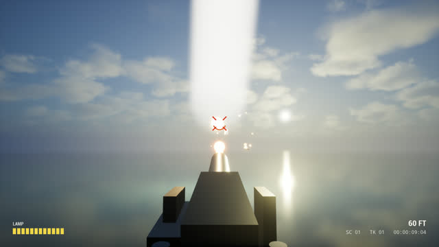
06:49, the grey box: a stand-in gun, the lamp's beam, a scout coming apart.
From the running game Thu 12 Nov, 15:40
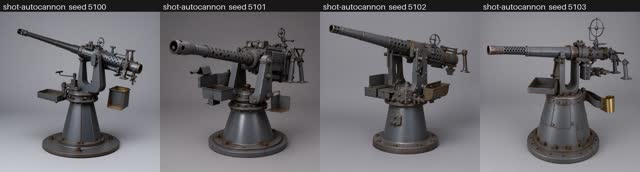
Four seeds of the player's gun. Seed 5102 became the reference for its Rodin model.
Image model Thu 12 Nov, 15:40
PromptA heavy mid-century naval anti-aircraft autocannon on a pintle mount as a single object: a thick conical steel pedestal bolted to a round…152 words
A heavy mid-century naval anti-aircraft autocannon on a pintle mount as a single object: a thick conical steel pedestal bolted to a round base plate, a U-shaped yoke carrying a single long 40 mm barrel with a flared flash hider and a perforated cooling jacket, twin spade grips with a butterfly trigger at the rear, a ring-and-bead spider sight, an ammunition feed tray on the left and a brass-catching chute on the right. Dark grey naval paint worn to bare steel on the edges, oil stains, light rust in the seams. Centred, the whole object in frame with clear space around it, three-quarter view from slightly above, on a seamless plain mid-grey studio background, soft even studio lighting from all sides, no cast shadow on the background, no other objects, photorealistic product photograph, sharp from front to back. No text, no letters, no numbers, no logos, no brand names, no maker's badges.

The automatic turret at 12:15: the local model on the left, Rodin's on the right, from the same studio picture. Rodin's went into the game.
Model render Thu 12 Nov, 15:40
PromptA small automatic twin-barrel anti-aircraft gun on a low tripod, 1.5 m tall: two long over-and-under barrels, an ammunition drum on each…57 words
A small automatic twin-barrel anti-aircraft gun on a low tripod, 1.5 m tall: two long over-and-under barrels, an ammunition drum on each side, a grey motor box with a braided cable, a turntable ring under the gun, three tubular legs each weighted with a canvas sandbag. Worn grey naval paint, bare steel edges. No markings, no text.

08:22: the first mothership's shield is down, its iris open on the lamp, and rain shows where the beam catches it.
From the running game Thu 12 Nov, 15:40
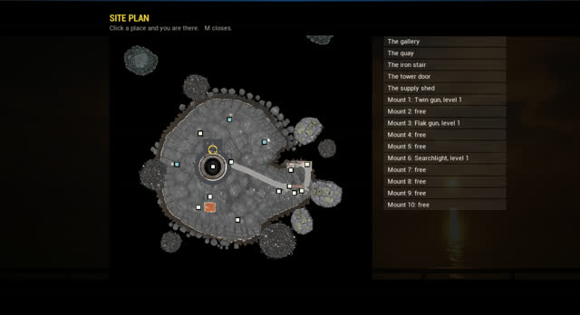
13:17, the first map: a camera straight above the rock photographs the level, and every mount is a mark and a line in a list. On Friday this becomes the keeper's chart.
From the running game Thu 12 Nov, 15:40

15:00: the new mothership, a fortress 500 metres long, made by Rodin from one of our studio pictures and the text above, over the gallery gun.
From the running game Thu 12 Nov, 15:40
PromptAn enormous alien warship about 500 metres long, a flying fortress built from thick slab-sided armour plates of dark gunmetal with worn,…96 words
An enormous alien warship about 500 metres long, a flying fortress built from thick slab-sided armour plates of dark gunmetal with worn, paler edges, with a tall blade-like keel at the prow, rows of round ports underneath and rows of tiny warm lights along the plate edges. Six box-shaped pods hang from its flanks on short armoured arms; their faces and undersides are open lattice grilles glowing furnace-amber from inside. Four tall, separate, tapering emitter towers with ribbed collars and glowing tips stand at the four corners of its flat back deck. No markings, no text.

The first version as it was copied into the new repository on Friday, photographed by a headless run at 12:46: Night 2 at the gallery gun, a scout bursting over the sights, a turret on the left.
From the running game Thu 12 Nov, 15:40


Day 2 Friday 13 November
Day two: the rebuild, planned around the hut, the walk and three ways to fight
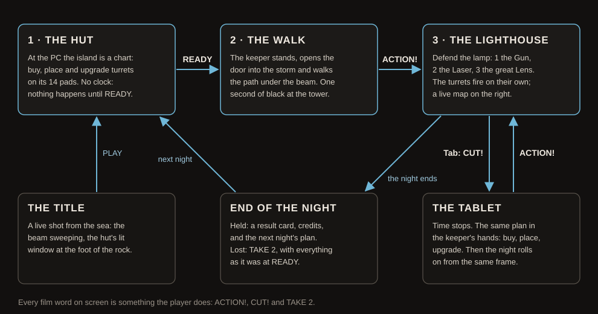
One night in FYR. Diagram drawn for this log from the design; the arrows are the player's own actions.
Drawn by our tools Fri 13 Nov, 13:05
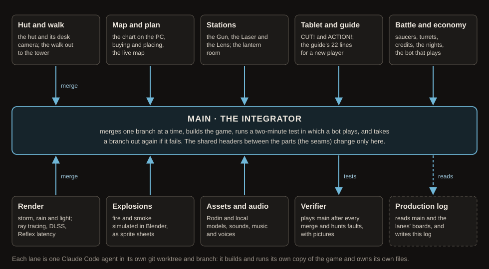
How the rebuild is split. Diagram drawn for this log.
Drawn by our tools Fri 13 Nov, 13:05
The skeleton runs: hut, walk, night, held, hut; and the first honest look at ray tracing
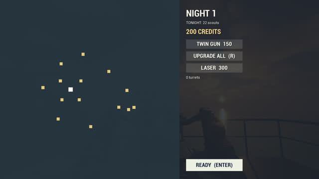
The hut's plan as a stand-in: the 14 pads are squares on flat blue, the cards are plain grey buttons. The map and plan lane draws the chart over this next.
From the running game Fri 13 Nov, 13:32

CUT! in the middle of Night 1: the world is frozen behind a stand-in tablet with the same plan on it. The banner at the top right is one of the first version's 64 achievements, which are being replaced by 30 plain honours.
From the running game Fri 13 Nov, 13:32
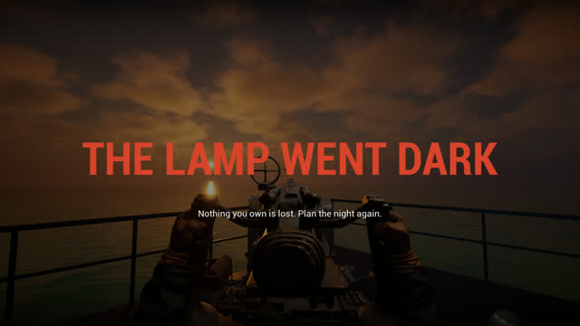
A lost night: THE LAMP WENT DARK, and nothing owned is lost. A key press later the keeper is back at his PC on Night 1, TAKE 2.
From the running game Fri 13 Nov, 13:32
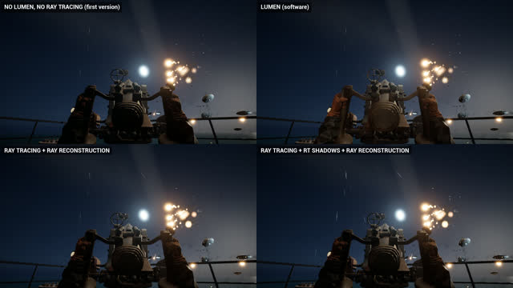
The same frozen frame at the gun in four lighting modes, with 30 scouts and a burst of flak. Pictures from the running game.
From the running game Fri 13 Nov, 13:32

Catching up, part one: the hut from Rodin, a lens sent back, the tablet, and the rules of the night
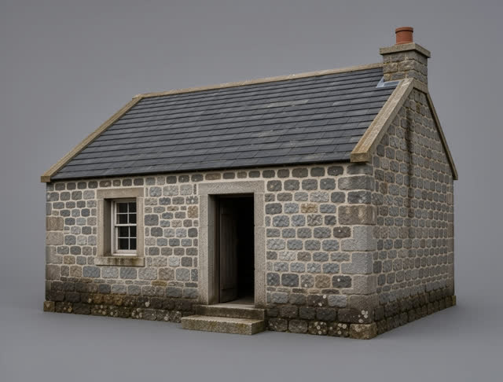
The cottage as MOSS-Image drew it at 12:58: seed 5101 of four, the one sent to Rodin.
Image model Fri 13 Nov, 17:41
PromptAn old lighthouse keeper's cottage from the 1920s as a single small building on its own, seen from a three-quarter view from the front left…250 words
An old lighthouse keeper's cottage from the 1920s as a single small building on its own, seen from a three-quarter view from the front left at a slightly raised eye level: one storey, about six metres long and four and a half metres deep, three metres to the eaves. Thick walls of rough grey granite rubble stone laid in lime mortar, weathered and salt-stained, the stones darker and damp at the foot. A steep pitched roof of small dark grey slate tiles with a plain stone ridge and a narrow eave. A square stone chimney stack at the right gable end with one short clay chimney pot. In the middle of the long front wall a deep stone doorway with a heavy granite lintel, the door standing wide open inward so the doorway is an empty dark opening; left of it one small deep-set window with a white-painted wooden frame of small panes, its glass dark. A worn stone threshold step. The building is cut off flat at the ground, standing on nothing. The whole building in frame with clear space around it, on a seamless plain mid-grey studio background, soft even diffuse studio lighting from all sides, no dramatic lighting, no cast shadow on the background, no ground, no grass, no path, no fence, no sea, no sky, no people, no other objects, photorealistic architectural photograph, natural colour, sharp. No text, no letters, no numbers, no house number, no logos, no brand names, no signs, no plaques, no markings.
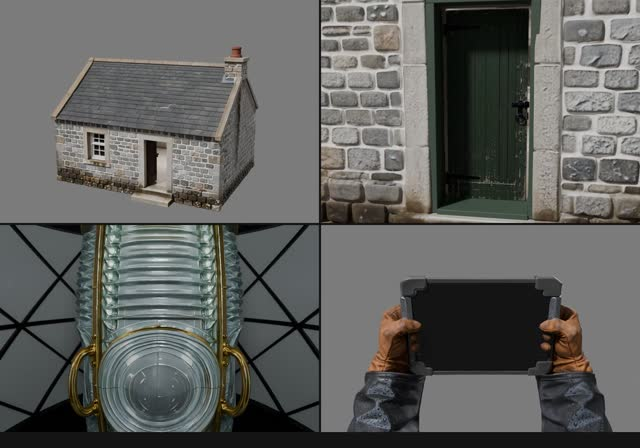
Four of the Rodin models as the developer saw them at 13:49, rendered in Blender: the cottage, its door, Rodin's lens, and the tablet held in the gun's gloves. The prompt above is the cottage's text.
Model render Fri 13 Nov, 17:41
PromptAn old one-storey lighthouse keeper's cottage, 6 m long, 4.5 m deep, 3 m to the eaves: thick grey granite rubble walls in lime mortar,…101 words
An old one-storey lighthouse keeper's cottage, 6 m long, 4.5 m deep, 3 m to the eaves: thick grey granite rubble walls in lime mortar, darker and damp at the foot; a steep pitched roof of dark grey slate with stone-capped gables; a square stone chimney stack with a clay pot at the right gable; a deep stone doorway with a granite surround, its door open inward so the doorway is a dark opening; a small white sash window in a granite surround; a stone step at the door. Cut off flat at the ground. No text, no signs, no markings.

The keeper's desk in the game at 16:36: the Rodin desk, monitor, keyboard, mouse and logbook, the plaster and the floor boards from two seamless MOSS-Image textures, and on the screen the plan for Night 1 drawn by the game.
From the running game Fri 13 Nov, 17:41
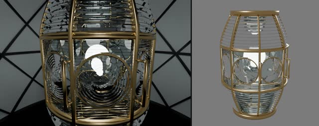
The lens built in code (left: in the lantern room; right: on its own), made after the developer turned down Rodin's.
Model render Fri 13 Nov, 17:41
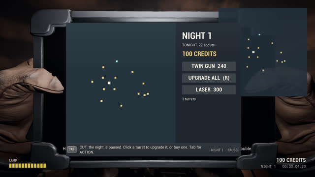
The tablet model in the game at 16:08: hands and tablet fit, but the gloves read as pale clay under the night's faded still. The plan on it is still the integrator's stand-in from 13:30.
From the running game Fri 13 Nov, 17:41
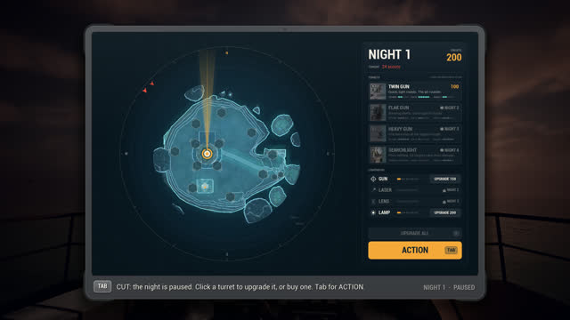
What the developer sees at 19:00 instead: CUT in the middle of Night 1, the night frozen and faded behind a tablet the game draws, with the real plan on it and the guide's line at its foot.
From the running game Fri 13 Nov, 17:41
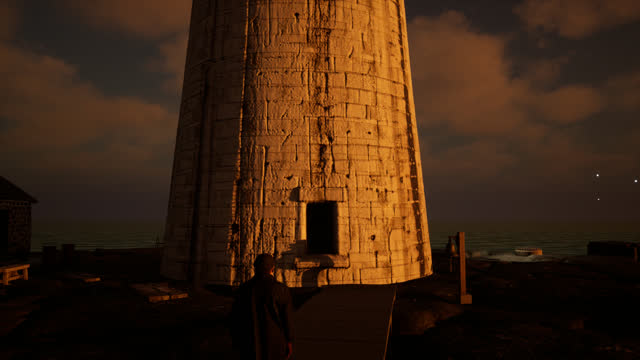
The walk's outside shot at 17:31: the rigged keeper from behind, walking the paved path to the tower at dusk. The opening ahead of him is the tower's window recess. The tower's old door did not fit the wall, so its leaf is hidden in this shot while a granite surround and a window frame, made with Rodin at 17:19, are fitted.
From the running game Fri 13 Nov, 17:41

Catching up, part two: rain on the graphics card, latency measured for real, photoreal rock, and explosions from Blender
![The render lane's picture tour at 15:44, paused frames. Top and middle rows: a lightning strike over three frames; the cloud flashes pale blue, the tower and the rock light up, and surf foam shows on the rock. The white grain at the top right is a fault: a wreck's splash near the camera, lit by the flash, drew as noise (the effects lane has replaced that material since). Bottom: the gun in the storm, and a scout at night in two lighting modes: MegaLights, the engine's renderer for many lights, made no visible difference on a night's few lights and stays off.](media/thumb/2026-11-13-1544-storm-tour.jpg)
The render lane's picture tour at 15:44, paused frames. Top and middle rows: a lightning strike over three frames; the cloud flashes pale blue, the tower and the rock light up, and surf foam shows on the rock. The white grain at the top right is a fault: a wreck's splash near the camera, lit by the flash, drew as noise (the effects lane has replaced that material since). Bottom: the gun in the storm, and a scout at night in two lighting modes: MegaLights, the engine's renderer for many lights, made no visible difference on a night's few lights and stays off.
From the running game Fri 13 Nov, 17:43
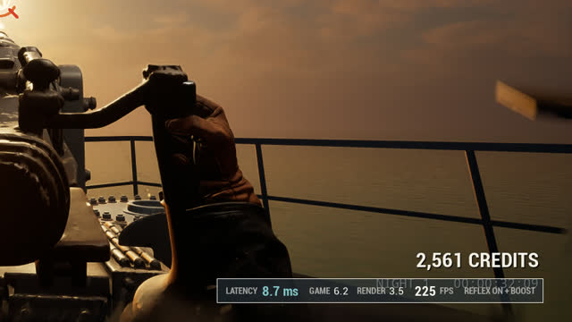
The game's latency panel in that run: 8.7 ms from input to picture, 225 frames a second, Reflex On + Boost. The player can switch it on in the settings.
From the running game Fri 13 Nov, 17:43
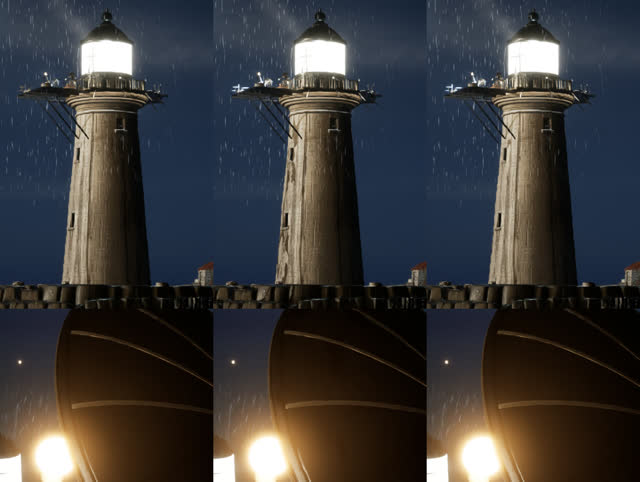
Ray-traced shadows on the tower and a saucer's hull. Left: ray tracing without its shadows. Middle: its shadows against the stand-in meshes, with black blotches. Right: the same shadows against the full geometry, clean.
From the running game Fri 13 Nov, 17:43
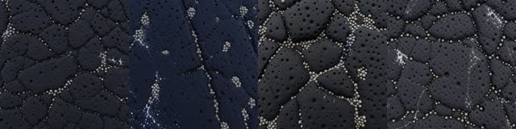
Four seeds of wet basalt at the fast setting, 15:12: the repeated star-shaped salt flecks made all four unusable.
Image model Fri 13 Nov, 17:43
PromptA flat texture photograph taken straight down from directly above onto a rough surface of wet black basalt rock at the tide line of a cold…144 words
A flat texture photograph taken straight down from directly above onto a rough surface of wet black basalt rock at the tide line of a cold northern sea, filling the whole frame edge to edge, an area about one metre across. Dark charcoal-black volcanic rock with small vesicles and pits, fine fractures and a few shallow cracks, the surface damp and dark; scattered clusters of small pale grey acorn barnacles in the crevices, thin patches of white dried salt crust, a few tiny dark blue mussels in one crack. Even, flat, diffuse overcast light from above, no cast shadows, no highlights, no glare, no perspective, no horizon, the same detail and density everywhere across the frame so it can tile. Photorealistic macro texture photograph, sharp from corner to corner, natural colour. No text, no letters, no numbers, no logos, no brand names, no markings.
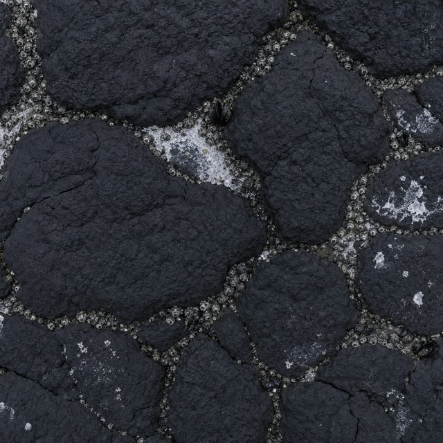
The same surface at full quality with a reworded prompt, 15:14: seed 7300, the one used for the wet rock.
Image model Fri 13 Nov, 17:43
PromptA flat texture photograph taken straight down from directly above onto a rough surface of wet black basalt rock at the tide line of a cold…154 words
A flat texture photograph taken straight down from directly above onto a rough surface of wet black basalt rock at the tide line of a cold northern sea, filling the whole frame edge to edge, an area about one metre across. Dense, fine-grained charcoal-black volcanic rock, its surface rough and crystalline with irregular natural fracture edges and a few shallow cracks, damp and dark; clusters of small pale grey acorn barnacles crowded in the cracks and hollows, irregular thin patches of white dried salt crust, a few small dark mussels wedged in one crack. Even, flat, diffuse overcast light, no cast shadows, no highlights, no glare, no perspective, no horizon, the same detail and density everywhere across the frame so it can tile. Photorealistic texture photograph taken with a high-resolution camera, sharp from corner to corner, natural colour, true to life. No text, no letters, no numbers, no logos, no brand names, no markings.
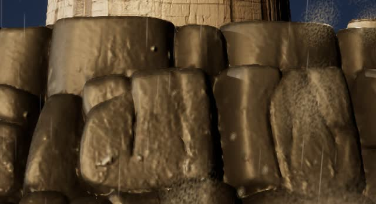
Before The rock below the tower with the first version's texture: smooth, smeared, glossy.
From the running game Fri 13 Nov, 17:43

After The same rock with the new material: fractured stone with salt in the cracks.
From the running game Fri 13 Nov, 17:43
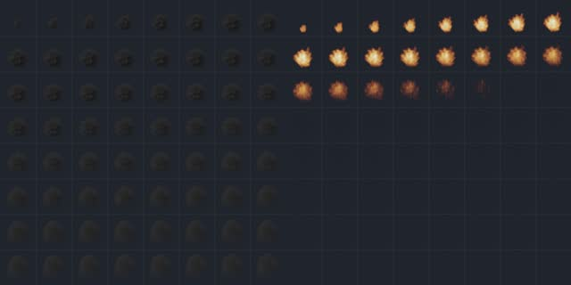
The first preview sheets at 13:37: a smoke puff (left) and a fire trail (right). Each reads as a cluster of balls, like cotton wool, not as smoke.
Model render Fri 13 Nov, 17:43

Three kills in the game at 16:56, storm, at the gun: orange fire with dark smoke rolling through it, and wreckage thrown out.
From the running game Fri 13 Nov, 17:43
![The render lane's picture tour at 15:44, paused frames. Top and middle rows: a lightning strike over three frames; the cloud flashes pale blue, the tower and the rock light up, and surf foam shows on the rock. The white grain at the top right is a fault: a wreck's splash near the camera, lit by the flash, drew as noise (the effects lane has replaced that material since). Bottom: the gun in the storm, and a scout at night in two lighting modes: MegaLights, the engine's renderer for many lights, made no visible difference on a night's few lights and stays off.](media/full/2026-11-13-1544-storm-tour.jpg)


Catching up, part three: the developer's first look and what each lane did, the first package, the newest tools, and a stop at 17:30
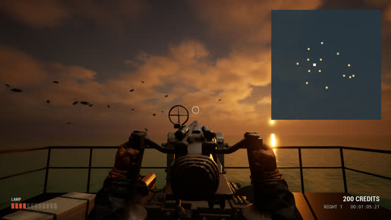
Before Night 1 at dusk with the stand-in HUD: a flat blue square for a map with dots on it, a row of lamp blocks and a timecode.
From the running game Fri 13 Nov, 17:44

After Night 1 at dusk with the new HUD and the living chart.
From the running game Fri 13 Nov, 17:44
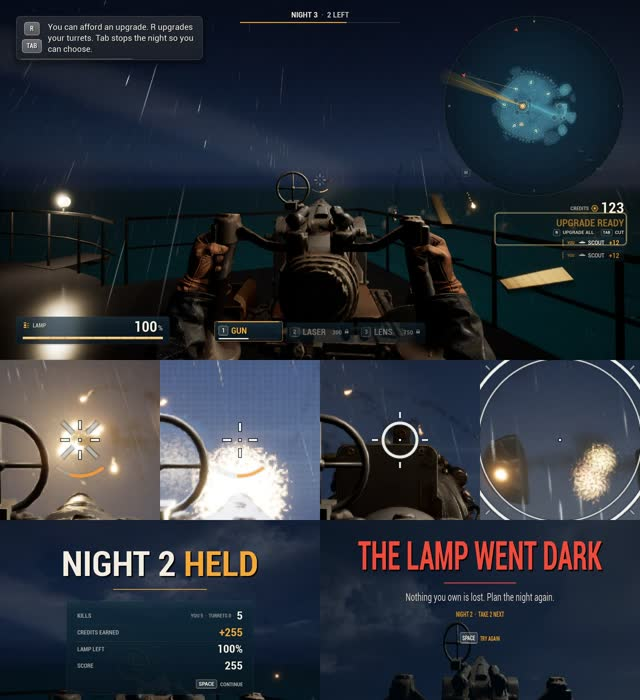
The new HUD as the developer first saw it at 16:41: the guide, the night's line, the station slots and the lamp (top); close-ups of the crosshairs with hit and kill markers (middle); a night held and a night lost (bottom). He liked it better than the old one and asked for a nicer frame than the box round UPGRADE READY; by 17:25 the box was gone. This picture still has the old "TAB CUT" label.
From the running game Fri 13 Nov, 17:44
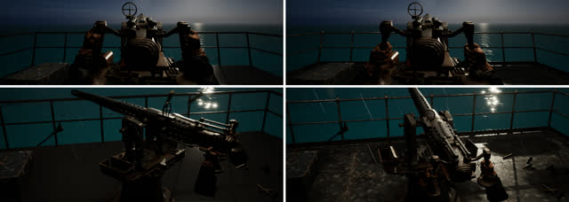
Before (left) and after (right), 17:23: the keeper's gloves closed round slim, round grips instead of beside fat ones, and the gun platform as a riveted, worn iron deck with real stanchions instead of a smooth dark sheet. Merged at 17:41.
From the running game Fri 13 Nov, 17:44

Friday evening: the first playable, the developer's notes as they came, and two things we got wrong
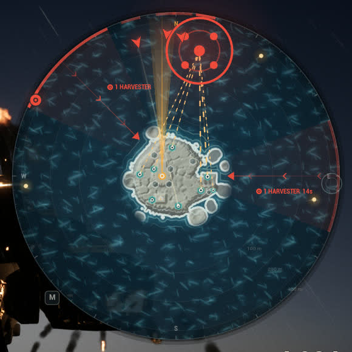
The live map in Night 4 at 19:31: the mothership's outline at the top with its four towers, the beam and the turrets' lines reaching out to it, two harvesters' arrows with their names and the seconds until one arrives, the turrets on the painted rock in the middle.
From the running game Fri 13 Nov, 20:03
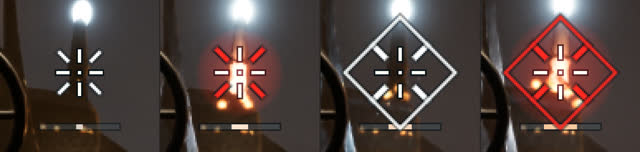
The gun's crosshair at 18:09, from left: a hit, a weak-point hit, a kill, a weak-point kill. The bar under it is the gun's heat.
From the running game Fri 13 Nov, 20:03

The great lens on the mothership in Night 4, 18:55: the guide says to shoot the four towers, then the core; the red marker shows a hit on a weak point, the boss bar at the top counts the towers. Not at the bar yet: the rain on the lantern's glass is drawn as drops the size of coins all over the view, and the render lane is making it finer.
From the running game Fri 13 Nov, 20:03
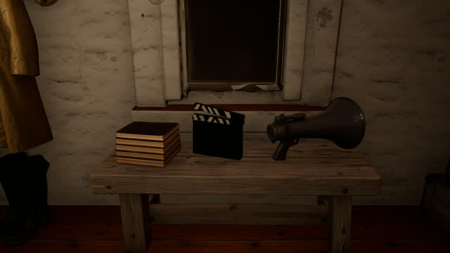
The bench in the hut at 19:55, the picture the developer judged: the clapperboard and the megaphone still standing. Both are being laid down.
From the running game Fri 13 Nov, 20:03

The three cards at 19:04. Easy: 20% fewer enemies, hulls 25% weaker, 30% less damage to the lamp, attacks come later.
From the running game Fri 13 Nov, 20:03

The picture tab at 18:59. The frame generation row reads "not available" in this run; that row is still open.
From the running game Fri 13 Nov, 20:03
A harvester's kill at night, 90 m from the gun, at 0.05, 0.15, 0.3, 0.55, 0.9, 1.5 and 2.6 seconds: smoke and fire simulated in Blender and rendered to sprite sheets, on top of the game's own particles and debris. 19:49.
From the running game Fri 13 Nov, 20:03

The mothership's end at 19:52, frames from one run: the fight, the rocket leaving and its flight to the hull (in the darkest frame only its motor glows against the hull), the hit, the ship breaking up, the wreck falling into the sea.
From the running game Fri 13 Nov, 20:03
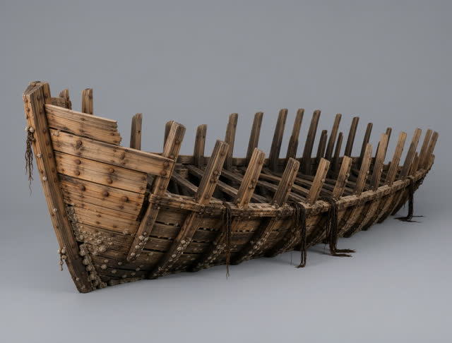
The wreck as MOSS-Image drew it, the picture sent to Rodin (Gen-2.5 High, 100,000 faces) at 19:00.
Image model Fri 13 Nov, 20:03
PromptThe remains of an old wooden shipwreck on its own, seen from a three-quarter view from the front left at a slightly raised eye level: the…162 words
The remains of an old wooden shipwreck on its own, seen from a three-quarter view from the front left at a slightly raised eye level: the lower hull of a wooden sailing ship about fourteen metres long lying tilted on its side, the planking gone from most of it so that a row of curved blackened oak ribs stands up from the heavy keel like a rib cage, a stump of the stem post at the bow, a few lower planks still nailed on, rusted iron bolts, the timbers split, worn round by the sea, crusted with barnacles and hung with dark kelp. The whole wreck in frame with clear space around it, on a seamless plain mid-grey studio background, soft even diffuse studio lighting from all sides, no cast shadow on the background, no water, no sand, no ground, no other objects, photorealistic product photograph, natural colour, sharp. No text, no letters, no numbers, no logos, no brand names, no markings.
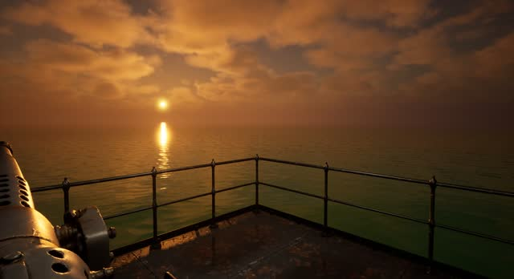
Before The view from the gallery gun at dusk: open sea to the horizon.
From the running game Fri 13 Nov, 20:03

After The same view with the wreck, skerries, a boat by a low island and a far coast on the horizon.
From the running game Fri 13 Nov, 20:03


Friday night: the first full package, half an hour of play, and a night of fixes
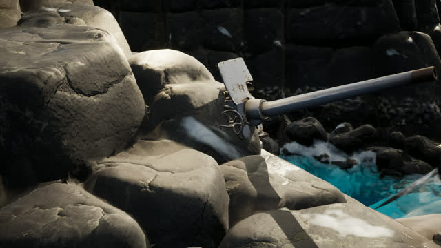
Before The heavy gun's barrel and shield sticking out of a pile of boulders above the sea; the mount is hidden inside the rock.
From the running game Fri 13 Nov, 23:30
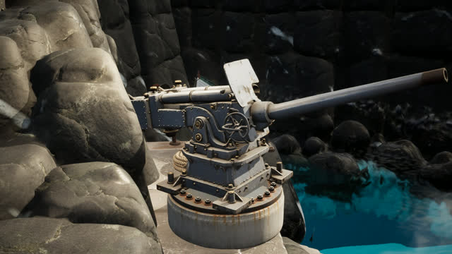
After The same heavy gun standing whole on its round mount on the quay's flat deck, the boulders beside it, the sea below.
From the running game Fri 13 Nov, 23:30
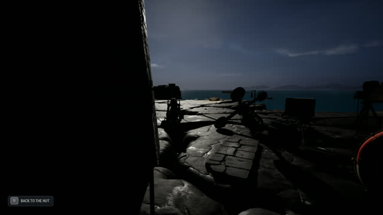
Before A night view on the rock: the tower's wall and the boulders black, the film equipment only silhouettes against a dark blue sky.
From the running game Fri 13 Nov, 23:30

After The same view lit: the tower's stone wall, a lit storm lantern on an iron post, the cracked rock, a toppled camera drone, a monitor on a stand, film cases and a lifebuoy.
From the running game Fri 13 Nov, 23:30

Before The view through the lens is a white blank with rain drops on the glass; only the HUD, the crosshair and the map show.
From the running game Fri 13 Nov, 23:30
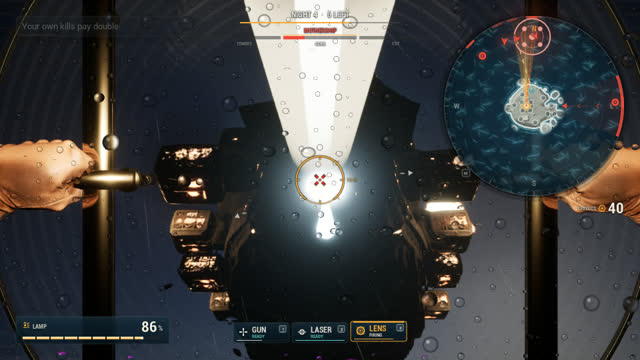
After Through the lens: the mothership's dark hull with its lit windows, the lens's wide shaft of light coming down onto it, a red hit marker in the crosshair, the keeper's gloves on the brass grips.
From the running game Fri 13 Nov, 23:30


Day 3 Saturday 14 November
The first ending: a drone films the keeper, and he watches it at home
![The drone's shot as it played in the last full test at 01:08, six moments of one continuous shot from one place out over the sea: the keeper on the gallery among the film gear with the launcher on his shoulder; the rocket leaving past the lit lantern; its trail reaching the mothership; the hit; the ship breaking up; the wreck falling into the sea at dawn. This is what the player sees, and the same view is what the drone films. Frames from the run's contact sheet, at the size the test recorded them.](media/thumb/2026-11-14-0108-the-drones-film.jpg)
The drone's shot as it played in the last full test at 01:08, six moments of one continuous shot from one place out over the sea: the keeper on the gallery among the film gear with the launcher on his shoulder; the rocket leaving past the lit lantern; its trail reaching the mothership; the hit; the ship breaking up; the wreck falling into the sea at dawn. This is what the player sees, and the same view is what the drone films. Frames from the run's contact sheet, at the size the test recorded them.
From the running game Sat 14 Nov, 01:25

Home, in the same run: he walks to the hut at dawn and steps in; the projector under the ceiling switches on, its reels turning and the beam leaving the lens; he goes to his chair under the soft beam with the sheet lit on the wall; the countdown on the leader; then the film itself, the keeper on the gallery as the drone saw him a minute earlier.
From the running game Sat 14 Nov, 01:25

The end of the film in the same run: THE END, with "...OF NIGHT 4." under it; SIXTEEN MORE ARE WAITING, the nights still to come before the last one; ON THE PC BEHIND YOU, with an arrow drawn the wrong way and scratched out, a second arrow the right way and THAT WAY. under it; then the view turns to the PC, where Night 5's plan is waiting.
From the running game Sat 14 Nov, 01:25
![The drone's shot as it played in the last full test at 01:08, six moments of one continuous shot from one place out over the sea: the keeper on the gallery among the film gear with the launcher on his shoulder; the rocket leaving past the lit lantern; its trail reaching the mothership; the hit; the ship breaking up; the wreck falling into the sea at dawn. This is what the player sees, and the same view is what the drone films. Frames from the run's contact sheet, at the size the test recorded them.](media/2026-11-14-0108-the-drones-film.jpg)


Watching the ending, and a keeper who moves like a tired old man

Dawn, from the camera the developer watched: the keeper steps up onto his doorstep, his body rising with the step, the door open into the dark room. The lamps on their posts and the window's glow are the hut's own lights. One frame of a frame-by-frame run at 02:41.
From the running game Sat 14 Nov, 14:35
![One take of the walk home, drawn by our tools from the generated motion on the keeper's skeleton. Top: seen from above; bottom: from the side; a figure every half second, the numbers are seconds. He sets out on the right at 0.0 and stops at the projector's switch on the left at 11.6. Left limbs red, right limbs blue, the green arrow is the way he faces. The model knows nothing of the step (the path it is given is flat), so the step up happens in the game, where our own code sets each boot on the stone.](media/thumb/2026-11-14-1320-walk-take.jpg)
One take of the walk home, drawn by our tools from the generated motion on the keeper's skeleton. Top: seen from above; bottom: from the side; a figure every half second, the numbers are seconds. He sets out on the right at 0.0 and stops at the projector's switch on the left at 11.6. Left limbs red, right limbs blue, the green arrow is the way he faces. The model knows nothing of the step (the path it is given is flat), so the step up happens in the game, where our own code sets each boot on the stone.
Drawn by our tools Sat 14 Nov, 14:35
Prompt0.0 s: An exhausted old man in a heavy coat walks slowly forward, shoulders hunched, tired after a long night. 5.5 s: The tired old man…57 words
0.0 s: An exhausted old man in a heavy coat walks slowly forward, shoulders hunched, tired after a long night. 5.5 s: The tired old man steps up onto a stone step and then over a raised threshold, slow and careful. 8.5 s: The tired old man takes a few slow steps forward and stops, standing still.
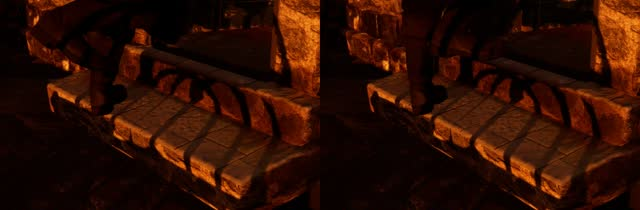
Seen from a camera beside the doorstep, two moments of the generated walk a quarter of a second apart: one boot comes down onto the stone tread and stands on it, clear of the riser, while the other leg is in the air. Run at 13:52.
From the running game Sat 14 Nov, 14:35

The drone's shot in a run at 13:44, two moments: the keeper on the gallery holding the launcher low across his hips, before the heave; and a moment after the shot, the rocket's flare out over the sea with sparks behind it, the keeper small on the gallery under the lit lamp. Frames from the run's contact sheet, at its small size.
From the running game Sat 14 Nov, 14:35
Prompt0.0 s: An old man stands holding a heavy metal tube low in front of his hips with both hands. 0.5 s: The old man heaves the heavy tube up…97 words
0.0 s: An old man stands holding a heavy metal tube low in front of his hips with both hands. 0.5 s: The old man heaves the heavy tube up onto his right shoulder with both hands, slowly and with effort. 2.4 s: The old man holds the heavy tube on his right shoulder with both hands, aims it up at the sky and steadies himself. 3.6 s: The old man fires the heavy weapon on his right shoulder; the recoil jolts his shoulder and upper body backward, then he steadies, still holding it on his shoulder.

![One take of the walk home, drawn by our tools from the generated motion on the keeper's skeleton. Top: seen from above; bottom: from the side; a figure every half second, the numbers are seconds. He sets out on the right at 0.0 and stops at the projector's switch on the left at 11.6. Left limbs red, right limbs blue, the green arrow is the way he faces. The model knows nothing of the step (the path it is given is flat), so the step up happens in the game, where our own code sets each boot on the stone.](media/full/2026-11-14-1320-walk-take.jpg)

The gameplay video, and the faults its takes caught

The video's first second: the great lens burns a carrier on the third night and it blows apart, the title over it. The lamp bar, the stations and the live map are the game's own screen.
From the running game Sat 14 Nov, 20:35
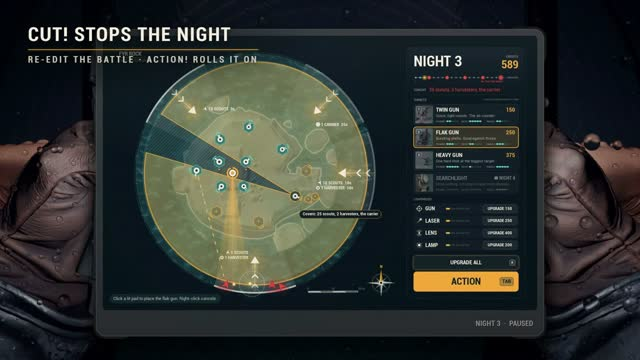
The pause in the video: time stopped and the keeper's tablet up, a Flak Gun picked, its arc of fire over the night's arrows. A frame from the recording itself, without the video's caption.
From the running game Sat 14 Nov, 20:35

The video's last shot but one: the keeper in his chair watches the drone's film of his own rocket on the hut's wall.
From the running game Sat 14 Nov, 20:35


The video finds its music and its voice, and the entry gets its cover

The entry's cover: key art made with the image model, the lighthouse's beam striking a saucer over a stormy sea, an explosion bursting from the saucer's lower left, FYR in the top left.
Image model Sat 14 Nov, 22:45
PromptCinematic night key art for a video game, a single dramatic film still: on the right, a tall old whitewashed stone lighthouse on a jagged…233 words
Cinematic night key art for a video game, a single dramatic film still: on the right, a tall old whitewashed stone lighthouse on a jagged black basalt rock out at sea, in a violent storm with heavy slanting rain; its lantern room at the top blazes white-gold, and from the great brass Fresnel lens a thick, burning shaft of golden-white light shoots out to the left across the dark sky and strikes a large alien flying saucer hovering over the sea beside the tower. The saucer is a wide, flat bronze disc with dark riveted hull plates and a rim of square bays that glow bright white all around its edge. Where the burning beam hits, a fiery explosion is just bursting out of the saucer's lower left side: a blinding white-orange core, flames and sparks and torn plating flying, the first instant of the blast. At the foot of the lighthouse a small stone keeper's hut with warm lit windows. Dark teal storm sea with white foam breaking on the rocks, low heavy clouds, a few small saucers far off in the clouds. Deep blue night, high contrast, the lamp, the beam and the explosion are the brightest things. A large calm empty area of dark sky on the upper left of the picture for a title. Photorealistic, highly detailed, wide angle, cinematic lighting, volumetric light in the rain, 35mm film still.

The final package, with the evening's fixes
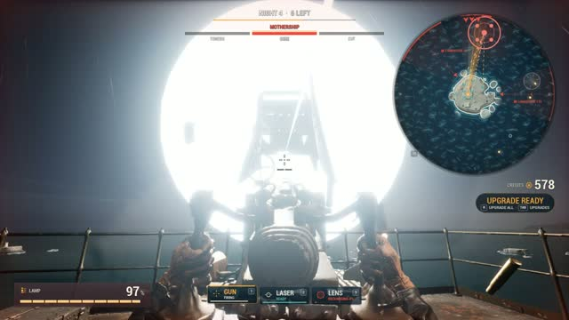
Before Before: the shield's burst as a white disc over the gun
From the running game Sat 14 Nov, 22:55
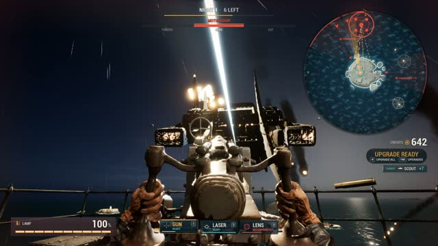
After After: the same moment, the burst left out at this distance
From the running game Sat 14 Nov, 22:55
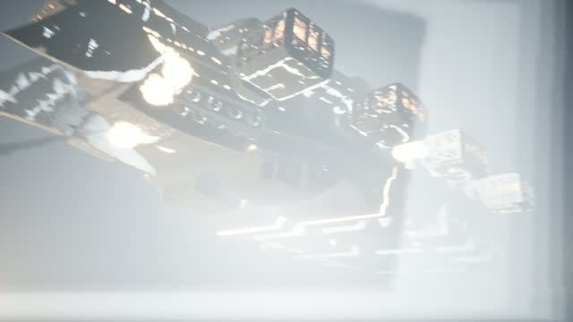
Before Before: the blast's light filled the fog round the camera
From the running game Sat 14 Nov, 22:55
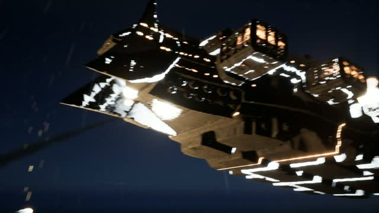
After After: the blast lights the ship, not the fog
From the running game Sat 14 Nov, 22:55
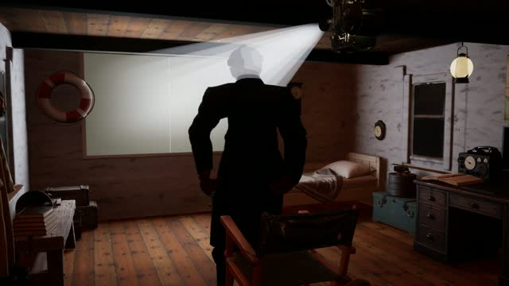
Before Before: the beam drawn over his head
From the running game Sat 14 Nov, 22:55
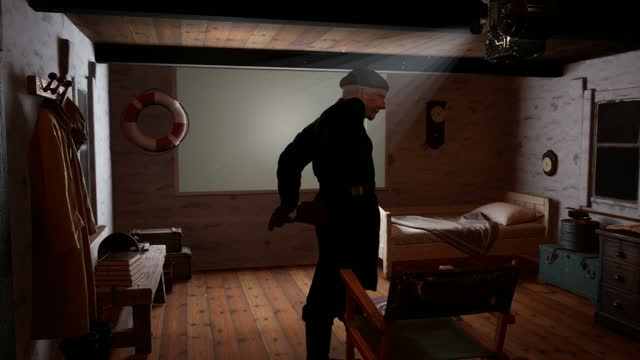
After After: the beam dims while his head blocks it
From the running game Sat 14 Nov, 22:55
Day 4 Sunday 15 November
The finale fixed, and recorded again for the video
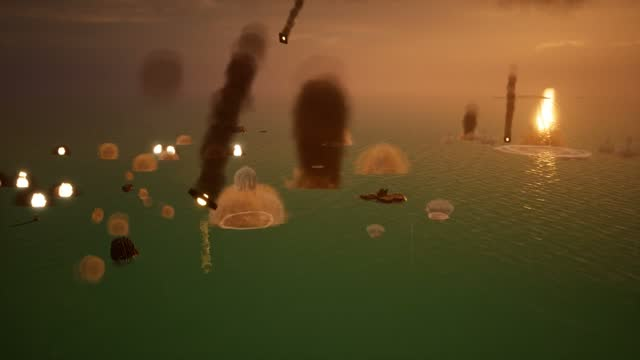
Before Before: the half is gone the moment its middle touches the water
From the running game Sun 15 Nov, 02:30

After After: it goes in with a splash its size, and sinks
From the running game Sun 15 Nov, 02:30
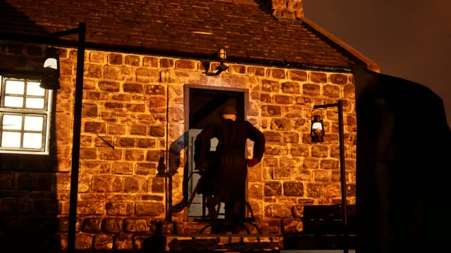
Before Before: arms held out stiffly
From the running game Sun 15 Nov, 02:30
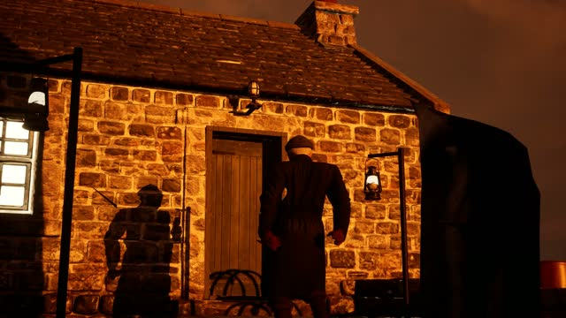
After After: arms relaxed, swinging with his steps
From the running game Sun 15 Nov, 02:30
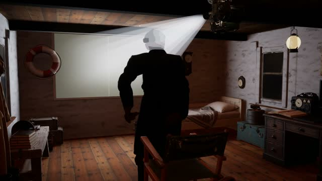
Before Before: the beam drawn over his head
From the running game Sun 15 Nov, 02:30
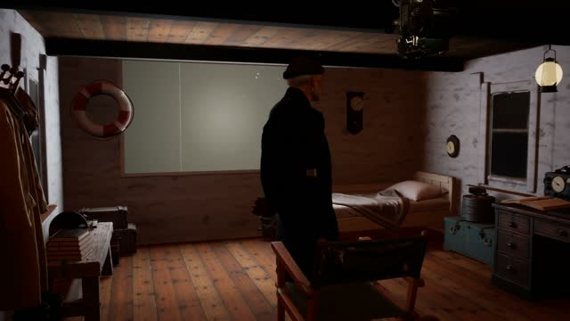
After After: his head blocks the beam
From the running game Sun 15 Nov, 02:30
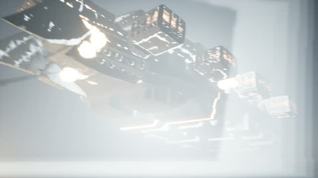
Before Before: the hit's first frames smeared
From the running game Sun 15 Nov, 02:30
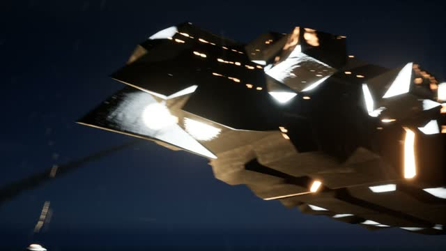
After After: sharp from the first frame
From the running game Sun 15 Nov, 02:30
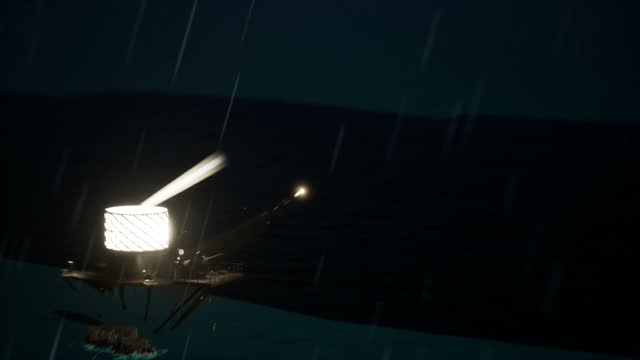
Before Before: the lamp room's glass drum, and no lighthouse under it
From the running game Sun 15 Nov, 02:30
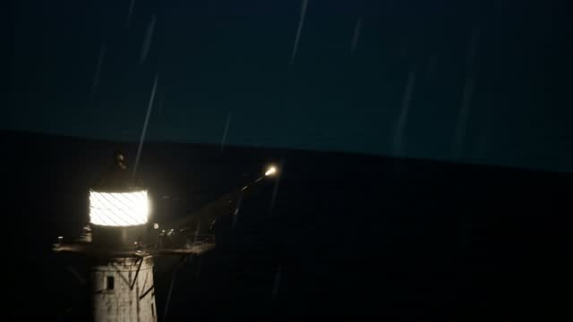
After After: the lighthouse, whole
From the running game Sun 15 Nov, 02:30


No picture of that kind yet.